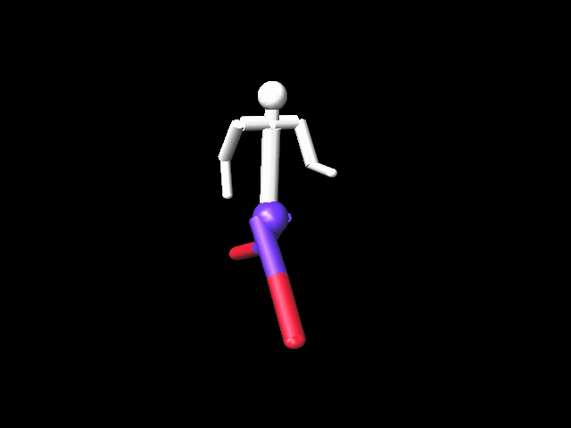
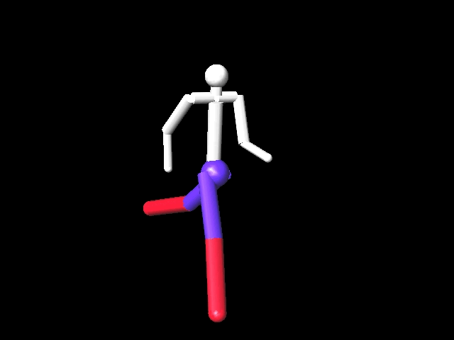
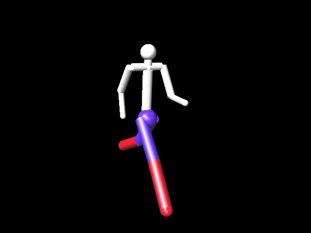
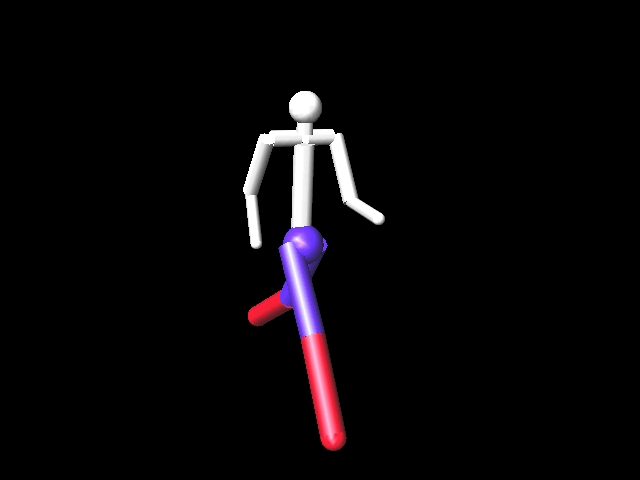
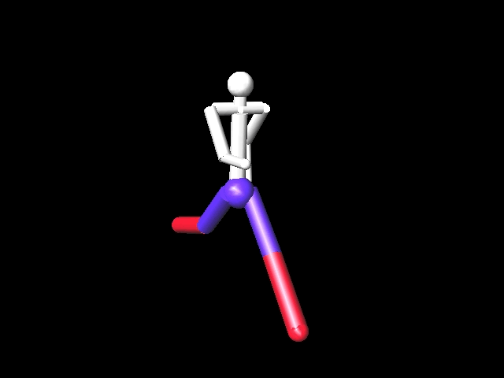
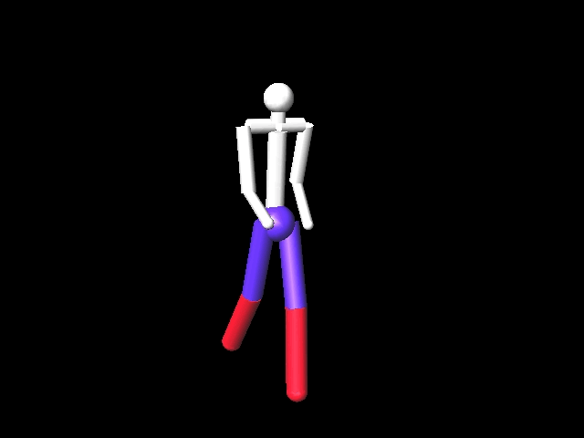

Assignment 4: Keyframe Animation
Project Info
- David Calvo
- dcalvo2
- MSVC @ C++20 / Visual Studio 2019 (Community Edition) / Windows 10
- 0 Late Days used
Table of Contents
Anything not mentioned in this list was not attempted.
- Interpolation::Sample {Linear} (Full)
- EulerRotationParameter::operator (Full)
- Matrix::closestRotation (Full)
- QuaternionRotationParameter::operator (Full)
- Matrix::Exp (Full)
- Interpolation::Sample {Catmull-Rom} (Full)
- Interpolation::Sample {Uniform Cubic B-Spline} (Full)
- Generate a sequence of images by taking snapshots of the scene (Full)
- Video Art Contest Submission
Implementation Details
Interpolation::Sample {Linear}
--fps 60 --gif-length 1 --interpolant 2 --parameter 1

No notes. Completey implemented.
EulerRotationParameter::operator
--fps 60 --gif-length 1 --interpolant 2 --parameter 3

No notes. Completey implemented.
Matrix::closestRotation
--fps 60 --gif-length 1 --interpolant 2 --parameter 2

No notes. Completey implemented.
QuaternionRotationParameter::operator
--fps 60 --gif-length 1 --interpolant 2 --parameter 5

No notes. Completey implemented.
Matrix::Exp
--fps 60 --gif-length 1 --interpolant 2 --parameter 4
No notes. Completey implemented.
Interpolation::Sample {Catmull-Rom}
--fps 60 --gif-length 1 --interpolant 3 --parameter 5

No notes. Completey implemented.
Interpolation::Sample {Uniform Cubic B-Spline}
--fps 60 --gif-length 1 --interpolant 4 --parameter 5

No notes. Completey implemented.
Generate a sequence of images by taking snapshots of the scene
--fps 60 --gif-length 1
Completey implemented. Two additional settings were added to facilitate
the creation of image sequences. The first is a
gif-length setting that determines how many seconds worth
of video images are generated. The second is an fps (frames
per second) setting that indicates how many frames should be in each
second of video images. The settings above will generate 60 video images
(60 images per second for 1 second).
Video Art Contest Submission
--width 1920 --height 1080 --interpolant 4 --parameter 5 --fps 60
--gif-length 15

This is my animation engine's rendering of the
juggleball01.key key file.